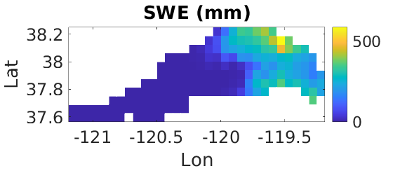

Using VICMATLAB to model the Tuolumne River Basin
A demo for new users of the VICMATLAB Toolbox
April 13, 2020
This is a tutorial to demonstrate how to use VICMATLAB to prepare inputs for and analyze results from the VIC model. The test basin is the Upper Tuolumne River Basin, near Yosemite National Park, California (about 5000 sq. km). The intent of the tutorial is to demonstrate the capabilities of VICMATLAB. When applicable, plots are averaged over the 2009-2011 calendar years.
To run this code, make sure that all files and paths are set properly according to your system. You will need VIC-4 and VIC-5, as well as the VICMATLAB toolbox. This example assumes the user is modeling at 1/16 degree resolution, with the VIC soil, vegetation, and elevation band files for the continental U.S. from Livneh et al. (2013), but it could easily be adjusted for another set of VIC parameters.
1. Obtain a shapefile of the study area.
You can download this from the USGS National Map Viewer website here: https://viewer.nationalmap.gov/basic/
The first step is to extract the Tuolumne River Basin using your favorite GIS software. I used R. (R makes a great GIS. See, for example, this blog post).
# Load HUC-8 basins into R
huc8 <- readOGR(".../Shape/WBDHU8.shp")
# Find the basin boundary for the Upper Tuolumne basin
upptuo <- huc8[huc8$Name == "Upper Tuolumne",]
writeOGR(tuolumne, "./data/upptuo.shp", driver = "ESRI Shapefile", layer = "bdy")
merit_mask <- raster(".../MERIT/DEM/Merged_1_16/merit_mask_1_16.tif")
merit_dem <- raster(".../MERIT/DEM/Merged_1_16/merged_merit_dem_1_16.tif")
# Clip DEM to basin boundary
cropped_dem <- crop(merit_dem, upptuo)
upptuo_raster <- rasterize(upptuo, cropped_dem)
upptuo_dem <- cropped_dem*upptuo_raster
writeRaster(upptuo_dem, "./data/revised_basin/upptuo_dem.tif", NAflag = 0, datatype = "INT2S")
```
#### 2. Download forcing data
1. Download [Livneh et al. (2013)][L13] or [Livneh et al. (2015)][L15] NetCDF meteorological forcing data.
2. We will use [Livneh et al. (2013)][L13] data for this tutorial.
3. The data can be downloaded from the Livneh Research Group's [website](https://www.esrl.noaa.gov/psd/data/gridded/data.livneh.html).
#### 3. Make a basin mask from the DEM.
Set the working directory to VICMATLAB, and add the subfolders to path.
```bash
cd ~/Documents/Codes/VICMATLAB/
addpath(genpath('./vicmatlab'));
Load the DEM into MATLAB and make a basin mask.
[upptuo_dem, R, lon, lat] = geotiffread2('./data/upptuo_dem.tif');
basin_mask = double(upptuo_dem);
basin_mask(basin_mask == 0) = NaN;
basin_mask(~isnan(basin_mask)) = 1;
figure, plotraster(lon, lat, basin_mask,'Basin Mask');
geotiffwrite('./data/upptuo_mask.tif', flipud(basin_mask), R);

4. Create soil parameter file
Create the soil parameter file for the basin by subsetting the soil parameter file for the CONUS, from Livneh et al. (2013). This can be downloaded from the same website as the meteorological forcing data.
yourpath = 'yourpathgoeshere' % Set your path here.
soilfile = fullfile(yourpath, 'vic.soil.0625.new.cal.adj.conus.plus.crb.can');
disp('Loading soil parameter file')
soils = load(soilfile);
disp('Soil parameter file has been loaded')
% extent of the study area; can be specified multiple ways
extent = fullfile(pwd, './data/upptuo_mask.tif'); % and here
grid_decimal = 5; % number of decimals used in forcing filenames
outformat = 'livneh'; % format of input soil parameter file (number of soil layers)
outname = fullfile(pwd, '/data/upptuo_soils_livneh.txt');
generate_tif = 1;
setup = 'livneh';
[soils_tuo, soilvarpath] = subset_soils(soils, extent, outname, outformat, grid_decimal, generate_tif, setup);
5. Plot the soil parameters
figure, subplot(2,1,1)
[elev, R, lon, lat] = geotiffread2(fullfile(soilvarpath, 'elev.tif'));
plotraster(lon, lat, elev, 'Elevation (m)')
subplot(2,1,2)
[dsmax, R, lon, lat] = geotiffread2(fullfile(soilvarpath, 'dsmax.tif'));
plotraster(lon, lat, dsmax, 'Dsmax (mm/day)')

6. Subset meteorological forcing data
Create ASCII input files for the meteorological forcing data. Subset it to the basin.
force_in = 'yourpathgoeshere'; % set path to the forcing files
numforcings = 4; % number of forcings in daily CONUS daily forcing file
% Beginning and ending years of simulation
beginyear = 2009;
endyear = 2011;
% Directory where clipped forcing files should be saved
force_out = ['./data/forc_' num2str(beginyear) '-' num2str(endyear)];
grid_decimal = 5; % number of decimals used in forcing filenames
maskname = './data/upptuo_mask.tif'; % basin mask
temp = subset_forcings(force_in, force_out, beginyear, endyear, maskname);
7. Plot the forcing data
forcingpath = './data/forc_2009-2011';
precision = 5;
varnames = {'PRECIP','TMIN','TMAX','WIND'};
prefix = 'data_';
forc = load_ascii_forcings(forcingpath, prefix, precision, varnames);
figure
tmax_map = xyz2grid(forc.lon, forc.lat, mean(forc.TMAX)');
plotraster(forc.lon, forc.lat, tmax_map, 'TMAX')
figure
prec_map = xyz2grid(forc.lon, forc.lat, mean(forc.PRECIP)');
plotraster(forc.lon, forc.lat, prec_map, 'PREC')
% Save as Geotiff
geotiffwrite('./data/livneh_precipitation_2009-2011_average.tif', ...
flipud(prec_map), R)

8. Disaggregate meteorological forcing data
- Run the VIC model as a meteorological forcing disaggregator.
- Create a global parameter file and run the following code to disaggregate the met. forcing data with MT-CLIM
disagg_force_out = ['./data/disagg_forc_' num2str(beginyear) '-' num2str(endyear)];
mkdir(disagg_force_out)
disp(['Created directory ' disagg_force_out ' for disaggregated forcings'])
disp('Running met. forcing disaggregation')
tic
system('/home/jschap/Documents/Software/VIC/src/vicNl -g ./data/global_param_disagg.txt')
toc
9. Plot the disaggregated forcings
% The location where you have saved the disaggregated forcings
forcingpath = './data/disagg_forc_2009-2011/';
precision = 5;
varnames = {'PRECIP','AIR_TEMP','SHORTWAVE','LONGWAVE','DENSITY','PRESSURE','VP','WIND'};
prefix = 'full_data_';
forc = load_ascii_forcings(forcingpath, prefix, precision, varnames);
nvars =length(varnames);
avg_maps = struct();
avg_maps.names = varnames;
for i=1:nvars
avg_maps.(varnames{i}) = fliplr(xyz2grid(forc.lon, forc.lat, mean(forc.(varnames{i}),1)'));
end
figure
for i=1:nvars
subplot(4,2,i)
plotraster(forc.lon, forc.lat, avg_maps.(varnames{i}), varnames{i})
end
% Save as Geotiff
geotiffwrite('./data/livneh_precipitation_downscaled_2009-2011_average.tif', ...
flipud(avg_maps.PRECIP), R)

10. Run VIC for water years 2010-2011.
Set up the global parameter file for this model run. A template is provided with VICMATLAB, under /data.
This setup is for the Upper Tuolumne Basin, in energy balance mode, with the frozen soils module disabled to reduce computational requirements. Use the template global parameter file to generate the specific list of outputs that we are using in this example.
system('/home/jschap/Documents/Software/VIC/vic/drivers/classic/vic_classic.exe -g ./data/global_param.txt')
Next, we will analyze the outputs from the VIC simulation. But first, we have to re-organize the VIC outputs so the VIC-output-loading function can work by entering the following commands on the command line.
cd /home/jschap/Documents/Codes/VICMATLAB/data/out_2009-2011/
mkdir eb; mv eb*.txt eb
mkdir wb; mv wb*.txt wb
11. Process VIC output data with VICMATLAB
% Get VIC run metadata
vic_out_dir = './data/out_2009-2011/';
timestep_out = 'daily';
info = get_vic_run_metadata(vic_out_dir, timestep_out);
% Create directories to store processed outputs
results_dir = fullfile(vic_out_dir, 'processed');
figdir = fullfile(vic_out_dir, 'figures');
mkdir(results_dir)
disp(['Created directory for results: ' results_dir]);
mkdir(figdir)
disp(['Created directory for figures: ' figdir]);
% Save the metadata from the VIC run
save(fullfile(results_dir, 'vic_run_metadata.mat'), 'info');
disp(['Saved VIC run metadata as ' fullfile(results_dir, 'vic_run_metadata.mat')])
% Read in and plot the VIC results
swe_col = 27; % column of the VIC output file with the variable of interest
basin_mask_name = './data/upptuo_mask.tif';
[~, swe_sub, swe, ~] = load_vic_output(vic_out_dir, basin_mask_name, swe_col);
swe_map = xyz2grid(info.lon, info.lat, mean(swe,2));
figure, plotraster(info.lon, info.lat, swe_map, 'SWE')

Check the output precipitation to make sure it matches the input precipitation.
prec_col = 13; % column of the VIC output file with the variable of interest
basin_mask_name = './data/upptuo_mask.tif';
[~, ~, precip, ~] = load_vic_output(vic_out_dir, basin_mask_name, prec_col);
% Notes:
% only works with water balance variables right now.
% need to generalize the code to handle energy balance variables
% also should find a less clunky way to specify the variable name, aside
% from the column number
precip_map = xyz2grid(info.lon, info.lat, mean(precip,2));
figure, plotraster(info.lon, info.lat, precip_map, 'Precip')
% Save as Geotiff
geotiffwrite('./data/precipitation_output_2009-2011_average.tif', ...
flipud(precip_map), R)

12. Convert inputs from ASCII to NetCDF
```matlab % Note: must use Livneh input files for the entire CONUS for the current setup
wkpath = '/home/jschap/Documents/Codes/VICMATLAB/'; parpath = '/home/jschap/Documents/Data/VICParametersCONUS/';
inputs.veglib = fullfile(parpath, 'vic_veglib_nohead.txt'); inputs.soilparfile = fullfile(parpath, 'vic.soil.0625.new.cal.adj.conus.plus.crb.can_no_July_T_avg.txt'); inputs.snowband = fullfile(parpath, 'vic.snow.0625.new.cal.adj.can.5bands'); inputs.vegparam = fullfile(parpath, 'vic.veg.0625.new.cal.adj.can');
inputs.forcdir = fullfile(wkpath, '/data/disagg_forc_2009-2011/full_data*'); inputs.domainfile_name = fullfile(wkpath, '/data/netcdfs/tuolumne_domain.nc'); inputs.params_name = fullfile(wkpath, '/data/netcdfs/tuolumne_params.nc');
classic2image(inputs); ```